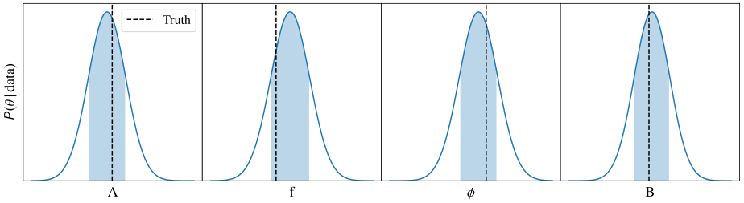
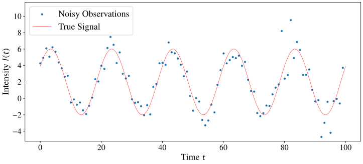
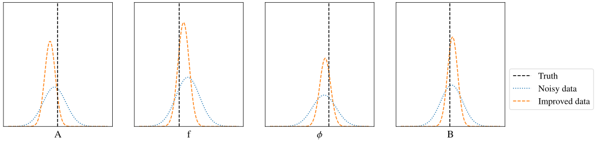
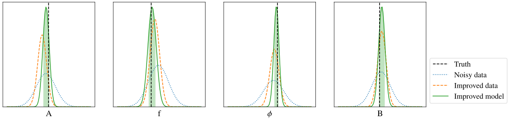
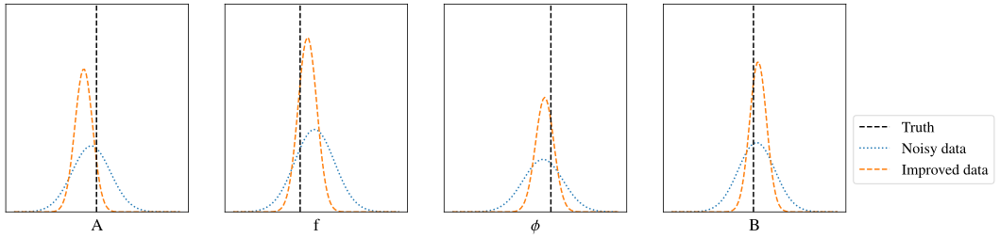
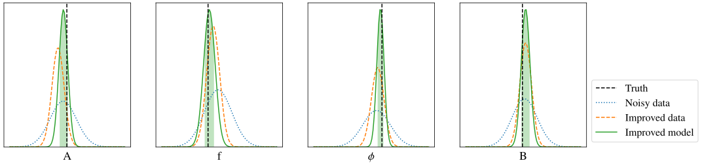

Bayesian Inference — An example

Bayesian Inference — An example
- Recorded light intensity at different times $I(t_{\text{obs}})$
- Theoretical model: $I'(t)\,$$=\,$$A$$\,\sin(2\pi$$f$$t +\,$$\phi$$)+\,$$B$$\,+\,n$
- Simple additive Gaussian noise ⇒ $P(\text{data}|\theta,\eta)=\,$$\mathcal{N}((I' - I), \sigma^2)$
Target & nuisance
parameters $\theta$$\,+\,$$\eta$
⟶
Make prediction $\text{data}' = \text{Model}(\theta,\eta)$
⟶
Compare to data
with $P(\text{data}|\theta,\eta)$
⟶
Bayesian Inference — An example
New (big) data sets are coming in through e.g. Euclid, DESI, LSST, ...
Example inference with more observations and better sensitivity



 





Noise is actually more complex:
$\sigma = \sigma_{\text{sky}} + \sigma_{\text{ant}} + \sigma_{\text{heat}} t$
Simple noise model will bias results
More (nuisance) parameters needed